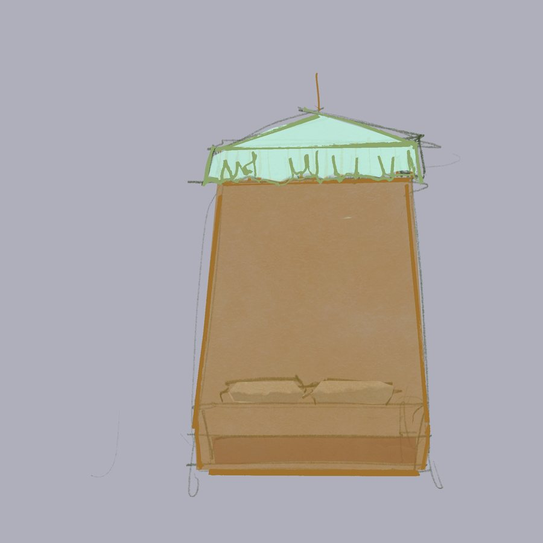
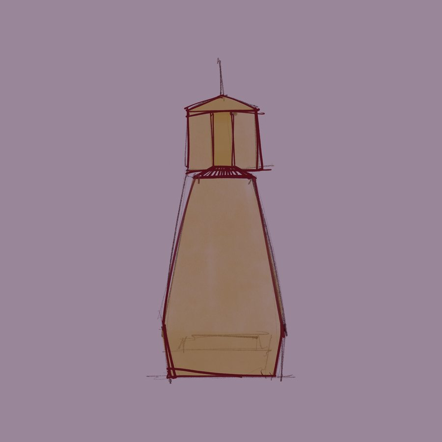

Digital Paintings
Drapery
Translucent drapery studies focused on folded volume, silhouette, soft edges, and fabric as a small sculptural object.







Digital Paintings
Translucent drapery studies focused on folded volume, silhouette, soft edges, and fabric as a small sculptural object.

